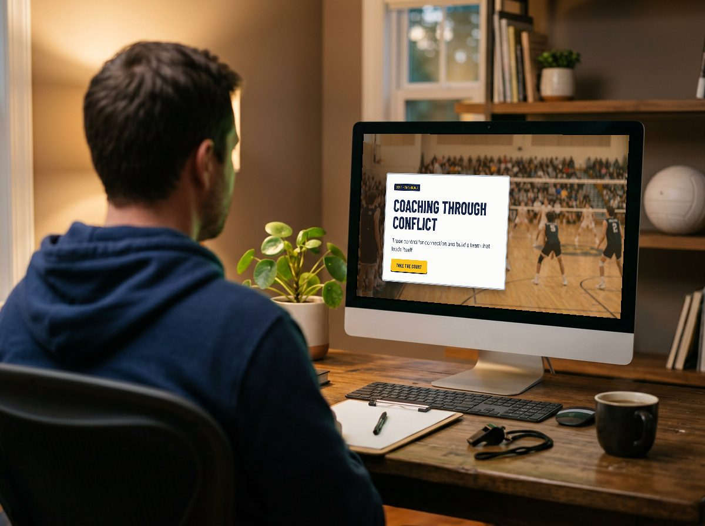
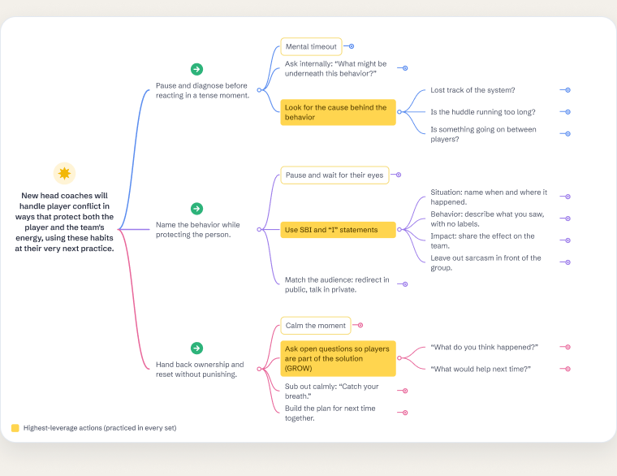
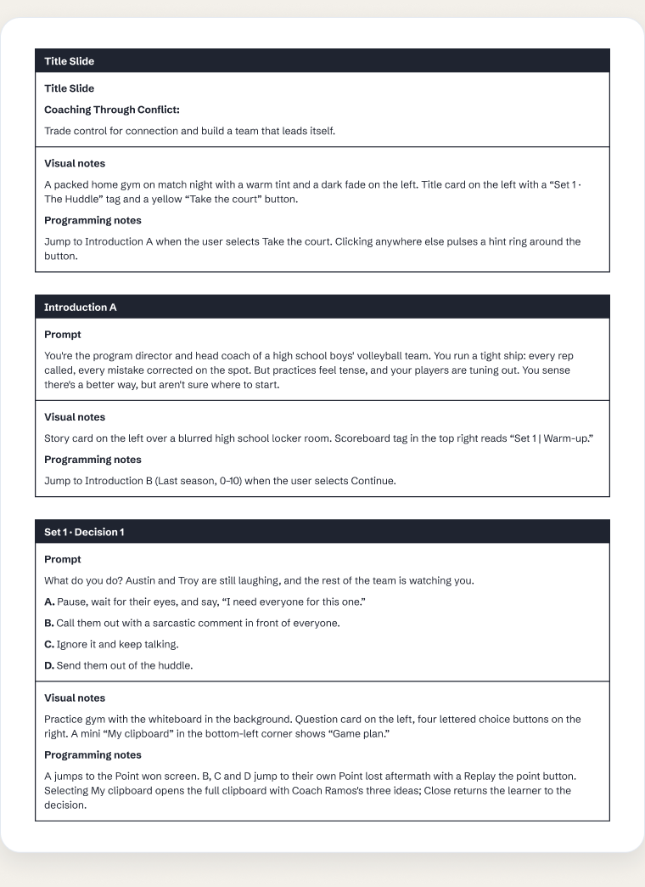
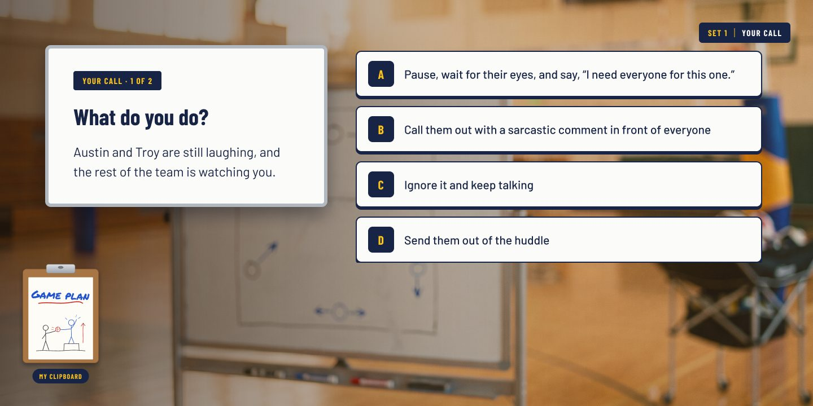
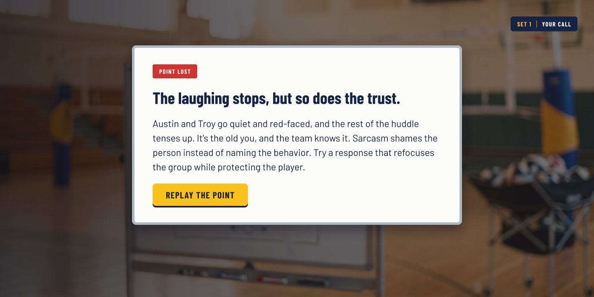
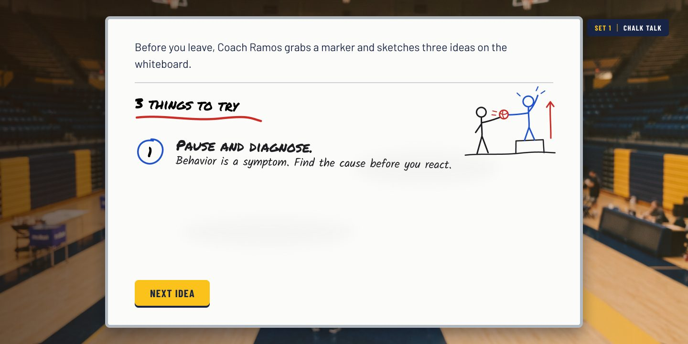
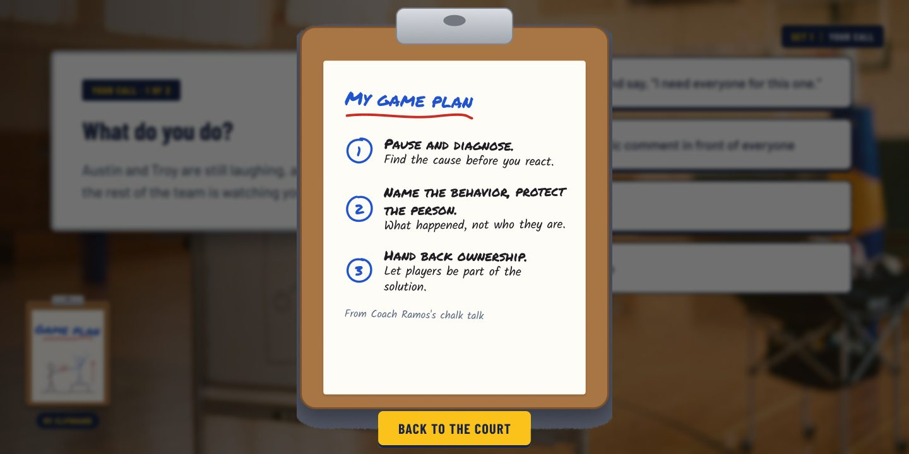

“Control doesn't come from running every rep. It comes from building players who can run it without you.”— Coach Ramos, Coaching Through Conflict
Coaching Through Conflict
A scenario-based simulation for new head coaches
Coaching Through Conflict is a scenario-based training module that teaches new varsity volleyball head coaches to handle the moments that test every coach: a distracted huddle, a disengaged star, a match on the line. Learners choose how to respond and see how each choice affects the team, without real players paying the price.

Experience the projectThe Problem
This isn't a hypothetical. I'm the program director and head coach it's based on. In one year my high school boys' program went from 0–10 and last in our league to 6–3, third place, and the first semifinal appearance in our school's history. The turnaround came from one change in how I coached, and this module turns that change into something other coaches can practice. (The module itself is a concept I'm still testing; the method behind it is proven on the court.)
The Process
I followed the ADDIE model (Analyze, Design, Develop, Implement, and Evaluate). My analysis wasn't a survey; it was my own season. My first year, I had a talented group, many of them just up from JV, but the way I coached held them back: I micromanaged every rep, got angry, and my assistants and I piled pressure on kids who mostly lacked varsity experience. We went 0–10. Then I sat in on a friend's college practice and watched him give his athletes real autonomy, and I rebuilt how I coached around that. The next season we went 6–3 and reached the semifinals. I distilled what changed into three principles (backed by the SBI and GROW frameworks), then designed a storyboard, built a clickable prototype, and refined it.
Each phase stayed anchored to one question: what does a coach need to do in the moment, not just know? I learned the answer the hard way, and the module exists so other coaches don't have to.
Action Map
I served as my own subject matter expert, drawing on five years as a head coach and program director and on what I saw sitting in on a friend's college men's volleyball practices. Using Cathy Moore's Action Mapping model, I started with the goal instead of the content: new head coaches handling player conflict in ways that protect both the player and the team's energy. From there, I mapped the on-court behaviors coaches need to do to reach that goal, rather than what they need to know about conflict theory.
Each behavior then broke down into smaller sub-actions. To keep the training focused, I built the scenarios only around the highest-leverage sub-actions, shown in yellow: looking for the cause behind the behavior, using SBI and “I” statements, and asking open questions so players become part of the solution. Learners practice these in every set because they address the root causes behind most player conflict: unclear expectations, misread effort, and frustration with nowhere to go. If new coaches master these, the larger goal is far more likely to follow.

Text-Based Storyboard
Once the action map was set, I wrote a text-based storyboard to plan the whole module, from the visuals and interactions to the exact text on every screen. Every piece was designed to put the learner on the court as the coach, showing consequences through the natural story of a season rather than right-or-wrong pop-ups. Each scenario was built around the core habits from the action map, and the scenarios themselves came from real moments in my own seasons as a head coach: two players laughing in the back of a huddle, a star player whose energy was fading, and a teammate's anger boiling over during a match.
Following Mayer's personalization principle of multimedia learning, the module speaks directly to the learner as “you” and adds a mentor, Coach Ramos, who teaches the three core ideas on a whiteboard before the first scenario. Learners then copy those ideas onto their own clipboard. From that point on, a small “My clipboard” sits in the bottom corner of every decision screen, so the game plan is one click away whenever a choice gets hard, the same way a real coach checks a clipboard on the sideline.

Style Guide
Before building the full module, I explored the visual direction in Midjourney, then created an eLearning style guide in Figma so every color, font, button and spacing choice stayed consistent across all 68 screens. The palette pulls navy and gold from the team's jerseys and pads, adds marker colors for Coach Ramos's whiteboard chalk talks, and saves green and red for points won and lost. Every element became a reusable style or component, so one change updates every screen.

Wireframe Progression
Next, I built wireframes and mockups to dial in the layout before adding any visuals. I started with grey boxes to place the story card, the four choices, the scoreboard and the clipboard, then moved to a mid-fidelity version with the real script to check reading length and flow. For the final screens, I set the look and mood in Midjourney, then generated the photorealistic gym scenes in Flora AI with Nano Banana, finished with a warm gold tint and a soft dark fade so the cards stay easy to read.

AI Image Generation & Character Consistency
From the start, I wanted the module to feel like you were standing in the gym with your own team, so I used AI to build the scenes: Midjourney to explore the style and mood, then Flora AI with Nano Banana, plus Gemini, to generate the images themselves. AI imagery brings its own creative and iterative challenges, so my wireframes worked as loose guides that I adjusted or threw out as the scenes came together. The biggest challenge was consistency: the same players had to appear across three sets, from a practice huddle to a packed match night. I kept the navy-and-gold uniforms, jersey numbers and gym details steady from scene to scene, so learners can follow Austin (#8), Troy (#14) and Eli (#12) from one moment to the next.

Visual Mockups
To create a consistent design, I started with a clean, neutral wireframe in Figma to test the layout and flow before committing to a style. I then studied how story-driven scenario modules pace their openings, and used what I learned to build a visual identity rooted in the sport itself.
The final style pairs photorealistic gym scenes, styled in Midjourney and generated in Flora AI with Nano Banana, and story cards designed as coach's whiteboards, in navy and gold drawn from the team's pads and jerseys. Headings use a condensed athletic typeface, while the chalk-talk screens use marker fonts and hand-drawn doodles. A scoreboard chip tracks progress, and jersey numbers stand in for player portraits, so the module never needs photos of real student-athletes. I built every color, type style, and button as a reusable style or component, so one change updates every screen.


Interactive Prototype
I built an interactive prototype in Figma to test the flow and functionality of the module before building out every scenario. The first version included the opening story, Coach Ramos's chalk talk and the first huddle decision, so I could gather feedback and refine the design early.
To support learners the whole way through, I added a mentor and a memory aid. Coach Ramos, a college coach whose players run their own practices, teaches the three core ideas on a whiteboard before the first scenario. Learners then copy those ideas onto their own clipboard. On every decision screen, a small “My clipboard” sits in the corner; selecting it opens the full game plan as an overlay, and “Back to the court” returns the learner to the same moment. Learners can check their notes whenever a choice gets hard without losing their place, the same way a real coach glances at a clipboard on the sideline.


Full Development
After several rounds of iteration, I developed the full module as a clickable prototype: 68 screens that move from a story-driven opening through three sets of decisions and a closing season wrap-up with Coach Ramos, each wrong choice with its own aftermath, and a success screen for each set. Each round of changes came from walking through the flow as a learner would. For example, I replaced a text-message exchange with a whiteboard chalk talk, so the mentor teaches the principles directly instead of just encouraging the learner.
I also used Figma's prototyping features to make the experience feel responsive. Prototype links handle the branching, so each choice leads to its own consequence and every “Replay the point” button returns learners to the decision. Smart Animate reveals the whiteboard ideas one at a time, a “mental timeout” screen lets learners tap their best guess about what is behind the behavior, and dissolve transitions carry the story from scene to scene. The clipboard opens as an overlay on top of the current screen and closes right back to the same moment, so checking notes never breaks the flow. A prototype variable also remembers the learner's mental-timeout guess, so the follow-up screen shows that guess beside the real cause.
Results
The method is already proven: holding this standard for myself and my assistants is what took my own program from 0–10 to a 6–3 season and our school's first-ever semifinal appearance. The module that teaches it is still a concept, so the next step is to add final artwork and test the full prototype with other high school volleyball coaches.
My biggest takeaway is that the shift had to start with me before it could reach the players: trading control for ownership changed the team only once I changed how I coached. The module is built to pass that lesson on, in the learner's own world of the gym, the whiteboard, and the huddle. These insights will shape how I design future scenario-based training for coaches, teachers, and teams.
Lessons Learned
This was my first training module, and I built it with no formal instructional design training. What made it possible was learning to build alongside AI. Through vibe coding and AI tools, I turned the ideas in my head into working drafts quickly: Claude helped me shape the script and structure, Midjourney helped me find the visual style, and Flora AI with Nano Banana generated the scenes.
The biggest lesson was that I didn't need to know everything before I started. I needed a clear goal, a real story, and a willingness to learn the tools as I built. Each round of feedback from the AI taught me something new about learning design, and I could test those ideas right away. I'm excited to keep growing this skill set as AI keeps expanding what's possible in scenario-based learning.